去年の6月に挿し木したバラが咲きました。
2025/05/19
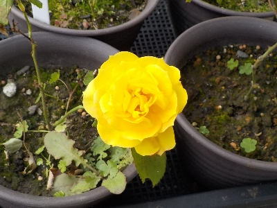
木が小さくて枝がひょろひょろなんですけど、きれいな花が咲きました。
このバラは今後どうしようかな？植えるスペースがあれば地植えにするんだけど、何かが枯れるとかしないと植える場所は出来ないんだな。鉢のサイズを一つ大きくするくらいしかできないかな。
2025/05/19

木が小さくて枝がひょろひょろなんですけど、きれいな花が咲きました。
このバラは今後どうしようかな？植えるスペースがあれば地植えにするんだけど、何かが枯れるとかしないと植える場所は出来ないんだな。鉢のサイズを一つ大きくするくらいしかできないかな。
2025/01/02
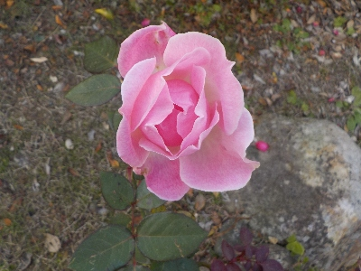
四季咲きのバラはいいな。いつでも咲いてて。
ゼラニウムやカーネーションも年中咲いているんだけど、バラは特別目立つな。なんでだろう？
2024/12/07
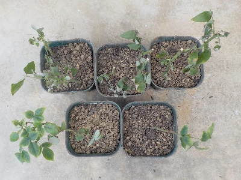
手前の2本は8月に挿し木したバラです。
奥のは10月にツルバラっぽいのを挿し木したものです。以前からあったんですが日陰にあったため、たまにしか咲いていませんでした。
両方とも冬に葉っぱを落とすタイプなので、冬が越せるかちょっと不安です。
2024/10/06
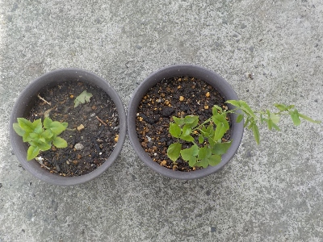
秋らしく涼しくなったのでバラをペットボトルから出しました。
早く大きくなって花が咲くといいんだけどな。
8月に挿し木したバラも青々しているので、そのうち鉢上げかな。
2024/08/17
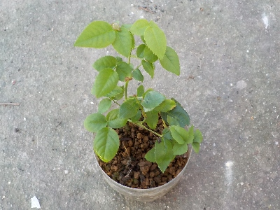
6月に挿し木したバラです。
青々としているのでたぶん根っこが出ているでしょう。
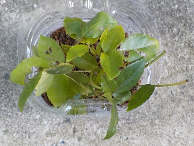
追加で同じものをまた挿し木しました。予備用です。
6月の挿し木はもうちょっと涼しくなったら鉢上げします。
2024/06/28
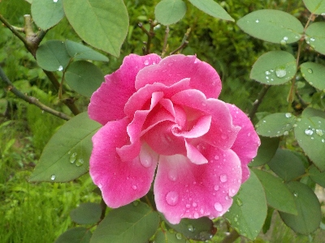
これくらいの花弁の数が好きかな。
とってもいい感じだ。
2024/06/16
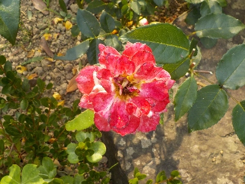
このバラの開花がほぼ終わったので、剪定しました。
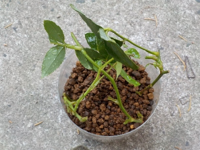
切った枝で挿し木しました。ペットボトル使用の密閉挿しです。
去年地植えのバラが１本枯れたので、挿し木が成功したらそこに植えようと思っています。
2024/05/20
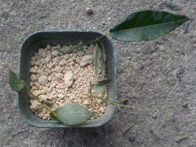
切り花の白いバラを手に入れたので挿し木にチャレンジです。
ちょびっとしかないので育つか不安です。
2024/05/05
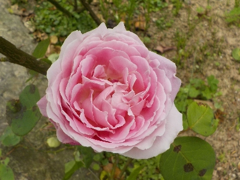
四季咲きなのでいつでも咲いてるバラですが、今の時期が1番花が大きいです。
花びらが多くて豪華な感じがしますね。でも厚いのはそんなに好きじゃないかな。
2023/12/30
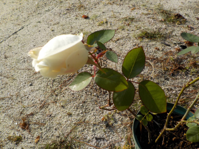
只今バラの花が開花中です。
3日間くらいはキレイに咲いてるんじゃないかな。
ピンクのバラも一緒に咲いたら紅白でめでたい感じでしたが、今回は白だけです。
2023/05/13
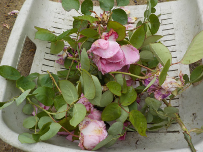
花が終わったものが多くなったので、切り取りました。
木を高くしないために、枝を多めにカットしました。
2023/05/08
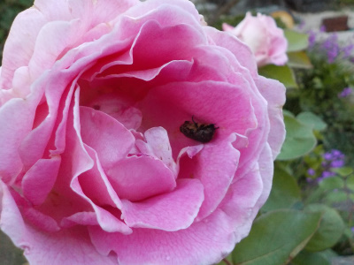
まるっこくて固そうな虫がいました。コガネムシかなと取り出したらカメムシでした。
ネットで検索したら、カメムシはツボミや花びらを食べるそうです。害虫ですね。
2023/04/22
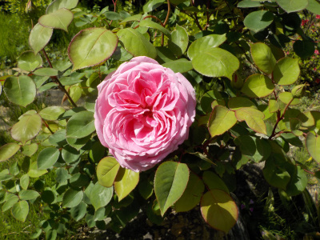
花びらが真ん中で分かれています。ダブルセンターって言うそうです。
これはこれで面白いのでよしとします。
2022/07/31
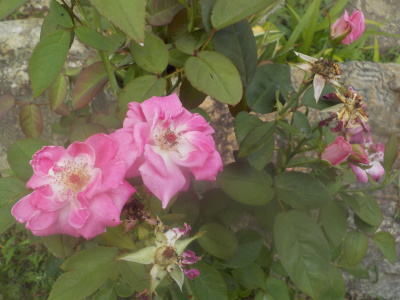
このバラはよく花が咲いています。日当たりがいい場所に植えたのが良かったのかな。
2022/05/22
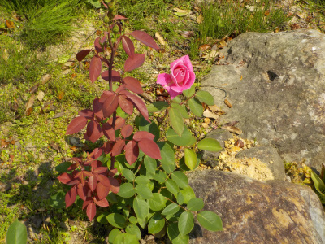
挿し木で増やしたバラなので、成長が遅いとか病気になりやすいんじゃないかと思っていたんですが、今のところすくすく育っています。
枝がしっかりしているみたいで、花が上を向いててカッコいいです。
2022/05/22
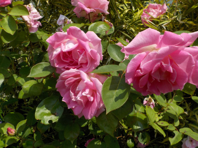
温暖化で冬が暖かいと、バラの花が肥大するって勝手に決めつけて思っています。
なんとなーくブヨブヨしてる感じがする。
2022/05/14
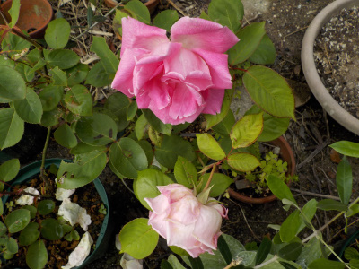
挿し木で増やしたバラはまだ小さいので、花がとっても重そう。
バランスが悪いです。
綺麗に咲いてるので、それくらいどうってことないですけど。
過去の記事
2022/05/08
母の日のバラ。
2021/09/26
挿し木のバラを活用
2021/09/19
挿し木したバラが花を咲かせました。
2021/05/09
今年は母の日くらいがバラのピークです。
2021/04/04
水挿しのバラっから芽が出ました。
2021/03/28
バラの挿し木を鉢上げしました。
2021/03/21
ペットボトルで挿木したバラが次々と葉を出しています。
2020/08/13
水挿しのバラに出っ張りが出来ていました。
2020/07/12
バラの花が終わった枝で水差しをしてみます。
2020/05/04
今年もバラが綺麗です。
買うなら白いバラかな。